Chapter 7: Movement and Navigation
As an isolated person, the ability to walk effectively is important to your recovery as well as to your safety and the conservation of personal energy and resources. Equally important is the ability to perform land navigation. The ability to determine location and navigate cross-country significantly increases the isolated person's chances of recovery. Fundamental to land navigation is the acquisition of detailed knowledge about the specific operational environment to which you or your unit may be sent including climate, terrain, hydrology, topography, and prominent terrain features or landmarks. This chapter provides an overview on movement and navigation considerations, including the use of expedient navigation aids.
DECISION TO STAY OR MOVE
7-1. The decision to stay in place or move while isolated requires careful consideration. The reasons to stay in place or move are typically based upon the following:
Requirements in the isolated person's isolated Soldier guidance (ISG) or evasion plan of action (EPA) to move.
Enemy situation. Does the enemy composition, disposition and activity threaten the isolated person's ability to evade or survive?
The current location does not provide multiple escape routes and/or contains numerous danger areas that canalize isolated person activities.
The current location does not provide adequate food, water, shelter, or the ability to report/communicate or support the recovery effort.
Injury or circumstance that limits the ability (physical and mental) of the isolated person to move.
An operational environment in which host country military and law enforcement agencies have control as well as the intent and capability to assist recovery operations may favor staying near the isolation site (ex. aircraft crash) initially. Movement is considered only when certain that water, shelter, food, and help can be reached, or after having waited several days, they are convinced that recovery is not coming and they are equipped to travel.
Other factors that should be considered prior to deciding to move include the following: - Remember MARCH. Does the isolated person have a head injury or condition that effects their ability to make a clear decision? Avoid making any decision immediately after the isolating event. If possible, wait a period to allow for recovery from the mental (if not the physical) shock resulting from the event. When shock has subsided, evaluate the situation, analyze the factors involved, and make valid decisions.
- Are the necessary tools, equipment and materials available to support movement? Movement is risky unless the necessities of survival are available. To leave a safe shelter to travel in adverse weather conditions is foolhardy unless in an escape or evasion situation.
7-2. Once the decision is made to move, several considerations apply regardless of the circumstance:
The ranking person must assume leadership and direct the efforts of the team during movement and recovery.
Continually assess your physical capabilities (rest, hydration level, energy intake and output, injury prevention, pace and durability, mental and emotional state). Stop, think and take action before a problem arises.
MOVEMENT CONSIDERATIONS
7-3. Proper movement maximizes speed and mitigates energy output along a route. The best posture when moving should balance the person's body weight directly over their feet. Dependent upon the requirement to move stealthily-the soles of the feet should be flat on the ground. Step over obstacles and not directly on them as they may pose a serious tripping hazard. When ascending a terrain feature, lock your knees with each step to assist the joints in carrying their weight. Traverse or use a zigzag motion moving up steep slopes to conserve energy and help maintain balance.
7-4. When descending a terrain feature, keep your back straight and keep your knees bent so they do not overextend the knees joint. The traverse is also used to descend steep terrain. After determining the step is stable, transfer weight from the lower foot to the upper foot and repeat the process. Additional considerations include -
Using game trails when they follow a projected course only in addition to an easier route of travel and the chance of securing game or locating water.
Surveying the surrounding countryside, and plan movement only after carefully surveying the terrain.
Studying your back trail carefully. Know your route backward equally as well as your route forward.
Continually assessing the climate and geography as you move. Asking yourself questions such as: - Is the weather changing?
- Is the route leading you into an area that does not support food, water, or shelter?
- Does the movement require a change in survival techniques?
Making camp early so that you have plenty of time to build a shelter.
Using the buddy system to watch for heat and cold injury.
Not placing your hands or feet anywhere without first looking to see what is there.
Grazing type animals (including deer) are better indicators of water than predators/carnivores.
Bees seldom range more than four miles from their nests or hives. They will usually have a water source in this range. Ants need water. A column of ants marching up a tree is going to a small reservoir of trapped water.
Mountainous and Cold Movement
7-5. When conducting movement in a desert environment, evaders must consider the following:
Avoid possible avalanches of earth, rock, and snow, as well as deep crevices in ice fields.
Movement on the wind packed side of a ridge is typically more advantageous because the snow surface is typically firmer and there is a better view of the route from above.
A loose snow layer underneath is more hazardous than a compacted one as the upper layer of snow will slide more easily with no rough texture to restrain it.
Leeward slopes collect snow that has been blown from the windward sides, forming slabs or sluffs, depending upon the temperature and moisture.
Use a pole to probe ice and snow conditions during movement
Avoid crossing glacial areas during the day.
Avoid traveling during a blizzard.
Take care when crossing thin ice. Distribute your weight by lying flat and crawling.
Cross-streams where the water level is lowest.
Wind-chill is a factor in all activities. Personal movement generates wind-chill that can lead to increased cold weather injury.
Have enough clothing to protect from the cold; know how to maximize its warmth. For example, always keep your head covered. An isolated person will lose 40 to 45 percent of their body heat from an unprotected head and even more from the unprotected neck, wrist, and ankles.
The brain is very susceptible to cold and can stand the least amount of cooling. Because there is much blood circulation in the head, most of which is on the surface, you can lose heat quickly if you do not cover your head.
Desert Movement
7-6. When conducting movement in a desert environment, evaders must consider the following:
Avoid salt marshes. Water in these areas is typically undrinkable without significant purification effort. The area is highly corrosive to skin, equipment and clothing.
Expect a large thermal shift between day and night. The drop in temperature at night occurs rapidly and will chill a person who lacks appropriate clothing.
Protect radios and batteries from direct sunlight while moving in the desert environment
Rest during the day, work during the cool evenings and nights.
Hide or seek shelter in dry washes (wadis) with thicker growths of vegetation and cover from oblique observation.
Use the shadows cast from brush, rocks, or outcroppings. The temperature in shaded areas will be cooler than the air temperature in exposed areas.
Use the 1:3 rule when judging distance in the desert. What appears to be 1 kilometer away is really 3 kilometers away.
Expect major sand and/or dust storms at least once a week. To avoid becoming lost, do not move during these storms.
Mirage makes it difficult to identify targets, estimate range, and see objects clearly. Move to high ground (at least 10 feet or more above the desert floor) to get above the superheated air close to the ground to overcome the mirage effect.
Find shade! Get out of the sun!
Place something between you and the hot ground.
If water is scarce, do not eat.
Jungle Movement
7-7. When conducting movement in a jungle environment, evaders must consider the following:
There is less likelihood of recovery from beneath a dense jungle canopy than in other survival situations. Movement will be required.
Avoid saltwater swamps if you can. If there are, water channels through it, use a raft to cross it.
Do not concentrate on the pattern of bushes and trees to your immediate front. Focus on the jungle further out and find natural breaks in the foliage. Look through the jungle, not at it. Stop and stoop down occasionally to look along the jungle floor.
Move through the jungle. Do not fight the jungle. Turn your shoulders, shift your hips, bend your body, and shorten or lengthen your stride as necessary to slide between the undergrowth.
Do not grasp at brush, vines when moving, or climbing slopes; they may have irritating spines or sharp thorns.
Protect yourself from insects with netting, clothing, etc.
Promptly treat wounds and scratches to avoid dangerous infection,
WATER CROSSINGS
7-8. Almost every description can be applied to rivers and streams. They may be shallow or deep, slow or fast moving, narrow or wide. Before crossing a river or stream, a good plan will need to be developed. The first step is to look for a high place from which to get a good view of the river or stream. From here, the isolated persons can look for a place to cross.
Rivers and Streams
7-9. Good crossing locations include-
A level stretch where it breaks into several channels. Two or three narrow channels are usually easier to cross than a wide river.
A shallow bank or sandbar. If possible, select a point upstream from the bank or sandbar so that the current will carry them to it if they lose their footing.
A course across the river that leads downstream so that isolated persons will cross the current at about a 45- degree angle.
7-10. The following areas possess potential hazards; avoid them if possible:
A ledge of rocks that crosses the river. This often indicates dangerous rapids or canyons.
An estuary of a river, because it is normally wide, has strong currents and is subject to tides. These tides can influence some rivers many miles from their mouths; personnel should go back upstream to an easier crossing site.
Eddies, which can produce a powerful backward pull downstream of the obstruction causing the eddy and pull personnel under the surface.
Rapids
7-11. To swim across a deep, swift river, swim with the current; do no swim against the current. Try to keep the body horizontal to the water. This will reduce the danger of being pulled under. In fast, shallow rapids, lie on your back, feet pointing downstream, finning your hands alongside your hips. This action will increase buoyancy and help steer away from obstacles. Keep your feet up to avoid getting them caught by rocks.
7-12. In deep rapids, lie on your stomach, head downstream, and angling toward the shore. Watch for obstacles and be careful of backwater eddies and converging currents, as they often contain dangerous swirls. Converging currents occur where new watercourses enter the river or where water has been diverted around large obstacles such as small islands. To ford a swift, treacherous stream, apply the following steps:
Step 1. Find a strong pole about 3 inches in diameter and 7 to 8 feet long to help ford the stream.
Step 2. Grasp the pole and plant it firmly on the upstream side to break the current. Plant feet firmly with each step, and move the pole forward a little downstream from its previous position, but still upstream.
Step 3. With the next step, place foot below the pole. Keep the pole well slanted so that the force of the current keeps the pole against their shoulder. Cross the stream in such a manner that the downstream current is being crossed at a 45-degree angle, (see figure 7-1).
Figure 7-1. Using a pole method to ford stream
7-13. If there are other people with the isolated person, ensure that they all cross the stream together. Position the heaviest person on the downstream end of the pole and the lightest person on the upstream end
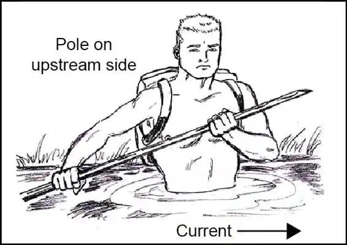
(see figure 7-2). In using this method, the upstream person breaks the current, and those below can move with relative ease in the eddy formed by the upstream person. If the upstream person temporarily loses footing, the others can hold steady while the upstream person regains footing. If there are three or more people crossing the stream and a rope is available, the technique shown in figure 7-3 on page 7-6 can be used. The length of the rope must be three times the width of the stream.
Figure 7-2. Using a pole for multiple crossing
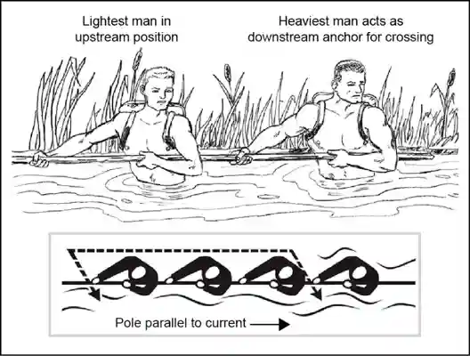
Figure 7-3. River crossing using rope
RAFTS
7-14. Rafts are a useful piece of equipment that enables a safer water crossing when the isolated person is required to cross a large body of water, cross with equipment, or their swimming skills are hindered by injury. If two ponchos are available, construct a brush raft or an Australian poncho raft. Using either of these rafts, equipment can be safely floated across a slow-moving stream or river. The following information will explain how to build field expedient rafts.
Brush Raft
7-15. The brush raft is constructed out of ponchos, fresh green brush, two small saplings, and rope or vine as follows (see figure 7-4 on page 7-7):
Step 1. Push the hood of each poncho to the inner side and tightly tie off the necks using the drawstrings.
Step 2. Attach the ropes or vines at the corner and side grommets of each poncho. Make sure they are long enough to cross to and tie with the others attached at the opposite corner or side.
Step 3. Spread one poncho on the ground with the inner side up. Pile fresh, green brush (no thick branches) on the poncho until the brush stack is about 18 inches high. Pull the drawstring up through the center of the brush stack.
Step 4. Make an X-frame from two small saplings and place it on top of the brush stack. Tie the X-frame securely in place with the poncho drawstring.
Step 5. Pile another 18 inches of brush on top of the X-frame, and then compress the brush slightly.
Step 6. Pull the poncho sides up around the brush and, using the ropes or vines attached to the corner or side grommets, tie them diagonally from corner to corner and from side to side.
Step 7. Spread the second poncho, inner side up, next to the brush bundle.
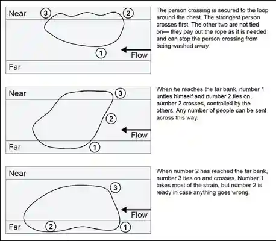
Step 8. Roll the brush bundle onto the second poncho so that the tied side is down. Tie the second poncho around the brush bundle in the same manner as the first poncho was tied around the brush.
Step 9. Place the raft in the water with the tied side of the second poncho facing up.
Figure 7-4. Brush raft
Australian Poncho Raft
7-16. The Australian poncho raft is constructed when there is no time to gather brush for a brush raft. This raft, although more waterproof than the poncho brush raft, will only float about 77 pounds of equipment. To construct this raft, use two ponchos, two rucksacks, two 4-foot poles or branches, and ropes, vines, bootlaces, or comparable material as follows (see figure 7-5 on page 7-8):
Step 1. Push the hood of each poncho to the inner side and tightly tie off the necks using the drawstrings.
Step 2. Spread one poncho on the ground with the inner side up. Place and center the two 4-foot poles on the poncho about 18 inches apart.
Step 3. Place rucksacks, packs, or other equipment between the poles. Also, place other items that need to be kept dry between the poles. Snap the poncho sides together.
Step 4. Use a friend's help to complete the raft. Hold the snapped portion of the poncho in the air and roll it tightly down to the equipment. Make sure to roll the full width of the poncho.
Step 5. Twist the ends of the roll to form pigtails in opposite directions. Fold the pigtails over the bundle and tie them securely in place using ropes, bootlaces, or vines.
Step 6. Spread the second poncho on the ground, inner side up. If more buoyancy is needed, place some fresh green brush on this poncho.
Step 7. Place the equipment bundle, tied side down, on the center of the second poncho. Wrap the second poncho around the equipment bundle following the same procedure as used for wrapping the equipment in the first poncho.
Step 8. Tie ropes, bootlaces, vines, or other binding material around the raft about 12 inches from the end of each pigtail. Place and secure weapons on top of the raft.
Step 9. Tie one end of a rope to an empty canteen and the other end to the raft. This will help to tow the raft.
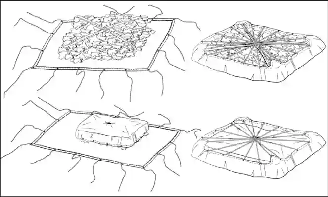
Figure 7-5. Australian poncho raft
7-17. When launching any of the above rafts, take care not to puncture or tear it by dragging it on the ground. Before starting to cross a river or stream, let the raft lay on the water a few minutes to ensure that it floats. If the river is too deep to ford, isolated persons should push the raft in front of them while they are swimming. The design of the above rafts does not allow them to carry a person's full body weight; they should be used as a float to move isolated persons and their equipment safely across a river or stream.
Log Raft
7-18. The log raft is constructed from dry, dead, or standing trees for logs. Spruce trees found in polar and subpolar regions make the best rafts. A simple method for making a raft is to use pressure bars lashed securely at each end of the raft to hold the logs together (see figure 7-6).
Figure 7-6. Log raft

FLOTATION DEVICES
7-19. If the water is warm enough for swimming and isolated persons do not have the time or materials to construct a poncho-type raft, they can use various flotation devices to negotiate the water obstacle. Items that can be used for flotation devices include-
Trousers. Knot each trouser leg at the bottom and close the fly. With both hands, grasp the waistband at the sides and swing the trousers in the air to trap air in each leg. Quickly press the sides of the waistband together and hold it underwater so that the air will not escape. Isolated persons now have water wings to keep them afloat as they cross the body of water.
Note. Wet the trousers before inflating to trap the air better; this may need to be done several times when crossing a large body of water.
Empty containers. Lash together empty gas cans, water jugs, ammunition cans, boxes, or other items that will trap or hold air. Use them as water wings. Use this type of flotation device only in a slow-moving river or stream.
Plastic bags and ponchos. Fill two or more plastic bags with air and secure them together at the opening. Use a poncho and roll green vegetation tightly inside it to form a roll at least 8 inches in diameter. Tie the ends of the roll securely. This can be worn around the waist or across one shoulder and under the opposite arm.
Logs. Use a stranded drift log, if one is available, or find a log near the water to use as a float. Test the log before starting to cross. Some tree logs, such as palm, will sink even when the wood is dead. Another method is to tie two logs about 24 inches apart and sit between the logs with their backs against one and their legs over the other (see figure 7-7).
Cattails. Gather stalks of cattails and tie them in a bundle at least 10 inches in diameter. The many air cells in each stalk cause a stalk to float until it rots. Isolated persons should test the cattail bundle to be sure it will support their weight before trying to cross a body of water.
Figure 7-7. Two-log raft
7-20. There are many other flotation devices that can be devised by using some imagination. Just make sure to test the device before trying to use it.
DETERMINE CARDINAL DIRECTION
7-21. Using the sun and shadows. The earth's relationship to the sun can help you to determine direction on earth. The sun always rises in the east and sets in the west, but not exactly due east or due west. There is also some seasonal variation. Shadows will move in the opposite direction of the sun. In the Northern Hemisphere, they will move from west to east, and will point north at noon. In the Southern Hemisphere, shadows will indicate south at noon. With practice, you can use shadows to determine both direction and time of day.
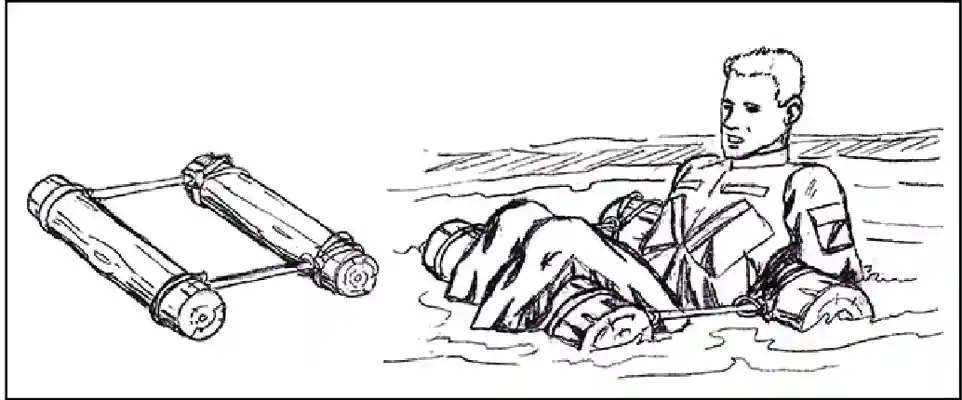
SHADOW TIP METHOD
7-22. The shadow-tip method is ineffective for use beyond 66'/2° latitude in either hemisphere due to the position of the sun above the horizon. Whether the sun is north or south of an isolated person at mid- day depends on the latitude. North of 23.4°N, the sun is always due south at local noon and the shadow points north. South of 23.4°S, the sun is always due north at local noon and the shadow points south. In the tropics, the sun can be either north or south at noon, depending on the date and location, but the shadow progresses to the east regardless of the date. This method consists of four basic steps (see figure 7-8):
Step 1. Place a stick or branch into the ground at a level spot where a distinct shadow will be cast. Mark the shadow tip with a stone, twig, or other means. This first shadow mark is always the West direction. (Note. The sun "rises in the east and sets in the west" (but rarely due east and due west). The shadow tip moves in just the opposite direction. Therefore, the first shadow-tip mark is always in the west direction, and the second mark in the east direction, any place on earth.
Step 2. Wait 10 to 15 minutes until the shadow tip moves a few inches. Mark the new position of the shadow tip in the same way as the first.
Step 3. Draw a straight line through the two marks to obtain an approximate east-west line.
Step 4. Standing with the first mark (west) to your left, the other directions are simple; north is to the front, east is to the right, and south is to the rear.
Note: A line drawn at right angles to the east-west line at any point forms the same approximate north-south line, which will help orient a person to the same cardinal directions.
Figure 7-8. Shadow-tip method
7-23. Inclining the stick to obtain a more convenient shadow does not impair the accuracy of the shadow-tip method. Therefore, an isolated person on sloping ground or in highly vegetated terrain need not waste valuable time looking for a large, level area. A flat spot, the size of the hand, is all that is necessary for shadow-tip markings and the base of the stick can be either above, below, or to one side of it.
7-24. In addition, any stationary object (the end of a tree limb or the notch where branches are jointed) serves just as well as an implanted stick because only the shadow tip is marked. The shadow-tip method can also be used to find the approximate time of day as follows:
Move the stick to the intersection of the east-west line and the north-south line, and set it vertically in the ground.
The west part of the east-west line indicates the time is 0600 and the east part is 1800.
The north-south line now becomes the noon line. The shadow of the stick is the hour hand in the shadow clock and with it - estimate time by using the noon line and the six o'clock line as the guides. Depending on the location and the season, the shadow may move either clockwise or counterclockwise, but this does not alter the manner of reading the shadow clock.
The shadow clock is not a timepiece in the ordinary sense. It always reads 0600 at sunrise and 1800 at sunset. However, it does provide a satisfactory means of telling time in the absence of properly set watches. Being able to establish the time of day is important for such purposes as keeping a rendezvous, prearranged concerted action by separated persons or groups, and
estimating the remaining duration of daylight. Shadow-clock time is closest to conventional clock time at midday, but the spacing of the other hours, compared to conventional time, varies somewhat with the locality and date.
EQUAL-SHADOW METHOD
7-25. This method determines direction and is a variation of the shadow-tip method, (see figure 7-9). It is more accurate and may be used at all latitudes less than 66° at all times of the year. It consists of the following four steps:
Step 1. Place a stick or branch into the ground vertically at a level spot where a shadow at least 12 inches long will be cast. Mark the shadow tip with a stone, twig, or other means. This must be done 5 to 10 minutes before noon (when the sun is at its highest point [zenith]).
Step 2. Trace an arc using the shadow as the radius and the base of the stick as the center. A piece of string, shoelace, or a second stick may be used to do this.
Step 3. As noon approaches, the shadow becomes shorter. After noon, the shadow lengthens until it crosses the arc. Mark the spot as soon as the shadow tip touches the arc a second time.
Step 4. Draw a straight line through the two marks to obtain an east-west line.
Figure 7-9. Equal-shadow method
WATCH METHOD
7-26. This method requires the use of a common analog watch-one that has hands. Use of this type of watch will enable the isolated person to determine the approximate true north and true south (see figure 7-10 on page 7-12). In the North Temperate Zone only, the hour hand is pointed toward the sun. A south line can be found midway between the hour hand and 1200 hours, standard time. If on daylight savings time, the north- south line is found between the hour hand and 1300 hours. If there is any doubt as to which end of the line is north, remember that the sun is in the east before noon and in the west after noon.
7-27. The watch may also be used to determine direction in the South Temperate Zone. However, the method is different. The 1200-hour dial is pointed toward the sun, and halfway between 1200 hours and the hour
hand will be a north line. If on daylight savings time, the north line lies midway between the hour hand and 1300 hours.
7-28. The watch method can be inaccurate, especially in the lower latitudes, and may cause circling. To avoid this, make a shadow clock and set the watch to the time indicated. After movement for an hour, take another shadow-clock reading and reset the watch if necessary.
7-29. If you only have a digital watch, draw a clock face on a circle of paper with the correct time on it and use it to determine your direction at that time. You may also choose to draw a clock face on the ground or lay your watch on the ground for a more accurate reading.
Figure 7-10. Watch method
24-HOUR CLOCK METHOD
7-30. To utilize this method, take the local military time and divide it by two. In the Northern Hemisphere, point the hour hand at the sun, and the 12 will point north. For example, it is 1400 hours. Divide 1400 by two and the answer is 700, which will represent the hour. Holding the watch horizontal, point the 7 at the sun and 12 will point north. In the Southern Hemisphere, point the 12 at the sun, and the resulting "hour" from the division will point south.
USING THE MOON
7-31. Since the moon has no light of its own, we can only see it when it reflects the sun's light. As it orbits the earth on its 28-day circuit, the shape of the reflected light varies according to its position. We say there is a new moon or no moon when it is on the opposite side of the earth from the sun. Then, as it moves away from the earth's shadow, it begins to reflect light from its right side and waxes to become a full moon before waning, or losing shape, to appear as a sliver on the left side. If the moon rises before the sun has set, the illuminated side will be the west. If the moon rises after midnight, the illuminated side will be the east. This obvious discovery provides a rough east-west reference during the night.
USING THE STARS
7-32. The location of the isolated person in the Northern or Southern Hemisphere determines which constellation is used to determine north or south direction. Each sky is explained as follows:
Northern Sky
7-33. The main constellations to learn are Ursa Major, also known as the Big Dipper, the Little Dipper, and Cassiopeia, also known as the Lazy W. Use them to locate Polaris, also known as the polestar or the North Star. Polaris is considered to remain stationary, as it rotates only 1.08 degrees around the northern celestial pole. The North Star is the last star of the Little Dipper's handle and can be confused with the Big Dipper. However, the Little Dipper is made up of seven rather dim stars and is not easily seen unless far away from any town or city lights. Confusion can be prevented by using both the Big Dipper and Cassiopeia together. The Big Dipper and Cassiopeia are generally opposite each other and rotate counterclockwise around Polaris, with Polaris in the center. The Big Dipper is a seven-star constellation in the shape of a dipper.
Stars
7-34. Forming the outer lip of this dipper are the "pointer stars" because they point to the North Star. Mentally draw a line from the outer bottom star to the outer top star of the Big Dipper's bucket. Extend this line about five times the distance between the pointer stars. The North Star will be located along this line.
7-35. The North Star can always be found at the same approximate vertical angle above the horizon as the northern line of latitude of the current location. For example, if at 35 degrees north latitude, Polaris will be easier to find if they scan the sky at 35 degrees off the horizon. This will help to lessen the area of the sky in which to locate the Big Dipper, Cassiopeia, and the North Star. Cassiopeia or the Lazy W has five stars that form a shape like a "W." One side of the "W" appears flattened or "lazy."
7-36. The North Star can be found by bisecting the angle formed on the lazy side. Extend this line about five times the distance between the bottom of the "W" and the top. The North Star is located between Cassiopeia and Ursa Major (the Big Dipper). After locating the North Star, locate the North Pole or true north by drawing an imaginary line directly to the earth (see figure 7-11).
Figure 7-11. Northern sky
Southern Sky
7-37. There is no single star bright enough, which can be seen near the south celestial pole. Therefore, use a constellation known as the Southern Cross. You can use it as a signpost to the south. The Southern Cross or
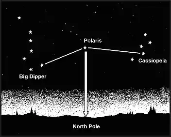
Crux has five stars. Its four brightest stars form a cross. The two stars that make up the cross's long axis are used as a guideline.
7-38. To determine south, imagine a distance four and one-half to five times the distance between these stars and the horizon. The pointer stars to the left of the Southern Cross serve two purposes. First, they provide an additional cue toward south by imagining a line from the stars toward the ground. Second, the pointer stars help accurately identify the true Southern Cross from the False Cross. The intersection of the Southern Cross and the two pointer stars is very dark and devoid of stars. This area is called the coal sac. Look down to the horizon from this imaginary point and select a landmark to steer by. In a static survival situation, isolated persons can fix this location in daylight by driving stakes in the ground at night to point the way (see figure 7-12).
Figure 7-12. Southern sky
7-39. Depending on the star selected for navigation, azimuth checks are necessary. A star near the north horizon serves for about half an hour. When moving south, azimuth checks should be made every 15 minutes. When moving east or west, the difficulty of staying on azimuth is caused more by the likelihood of the star climbing too high in the sky or losing itself behind the western horizon than it is by the star changing direction angle. When this happens, it is necessary to change to another guide star.
Improvised Compass
7-40. Improvised compasses can be constructed using a piece of ferrous metal, either needle-shaped or a flat double-edged razor blade, and a piece of thread or long hair from which to suspend it. Magnetize or polarize the metal by slowly stroking it in one direction on a piece of silk or carefully through your hair using deliberate strokes. You can also polarize the metal by stroking it repeatedly at one end with a magnet. Always stroke in one direction only. Suspend the needle or blade with the hair. The needle will gradually align itself in the north-south direction.
7-41. If you have a battery and some electric wire, you can polarize the metal electrically. The wire should be insulated. If it is not insulated, wrap the metal object in a single, thin strip of paper or a leaf to prevent contact. The battery must be a minimum of 2 volts. Form a coil with the electric wire and touch its ends to the battery's terminals. Repeatedly insert one end of the metal object in and out of the coil. The needle will become an electromagnet. When suspended from a piece of nonmetallic string or floated on a small piece of wood, cork, or a leaf in water, it will align itself with a north-south line.
7-42. A more elaborate improvised compass can be constructed using a sewing needle or thin metallic object, a nonmetallic container (for example, the cut-off bottom of a plastic container or soft drink bottle), and the silver tip from a pen. To construct this compass, take an ordinary sewing needle and break in half. One half will form the direction pointer and the other will act as the pivot point. Push the portion used as the pivot
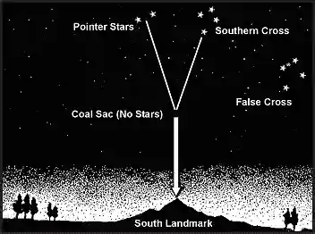
point through the bottom center of the container; this portion should be flush on the bottom and not interfere with the lid. Attach the center of the other portion (the pointer) of the needle on the pen's silver tip using glue, tree sap, or melted plastic. Magnetize one end of the pointer and rest it on the pivot point.
Floating Needle or Leaf Compass
7-43. Magnetize a metal sewing needle by stroking it in one direction with a piece of silk or by running it across a small magnet. Oil the needle by passing it through your hair. Place the needle gently on the water surface. The oil on the needle will cause the needle to float on the water surface. The needle will gradually align itself in the north-south direction. As an alternative, the magnetized needle is placed on a small piece of cork, leaf, duct tape, etc. The needle will float and will gradually align itself in the north-south direction.
OTHER MEANS OF DETERMINING DIRECTION
7-44. Moss growing on a tree cannot be relied on to indicate north because moss grows completely around some trees. Actually, growth is lusher on the south-facing side of trees in the northern hemisphere and on the north-facing side of trees in the southern hemisphere. If there are several felled trees around for comparison, look at the stumps. Growth is more vigorous on the side toward the equator, and the tree growth rings will be more widely spaced. Conversely, the tree growth rings will be closer together on the side toward the poles.
7-45. Wind direction may be helpful in some instances where there are prevailing directions and the isolated persons know what they are.
7-46. Recognizing the differences between vegetation and moisture patterns on north- and south-facing slopes can aid in determining direction. In the northern hemisphere, north-facing slopes receive less sun than south-facing slopes and are therefore cooler and damper. In the summer, north-facing slopes retain patches of snow. In the winter, trees and open areas on south-facing slopes and the southern side of boulders and large rocks are the first to lose their snow. The ground snowpack is also shallower due to the warming effects of the sun. In the southern hemisphere, all of these effects will be the opposite.
NAVIGATION METHODS
7-47. There are three primary means of navigation generally available to the isolated person: global positioning system (GPS), dead reckoning, and terrain association. .
GLOBAL POSITIONING SYSTEM
7-48. The GPS is a space-based, global, all-weather, continuously available, radio positioning navigation system. It is highly accurate in determining position location derived from signal triangulation from a satellite constellation system. It is capable of determining grid and geographic coordinates (i.e. latitude and longitude) as well as altitude of the individual user. It is fielded in handheld, man pack, vehicular, aircraft, and watercraft configurations.
7-49. The GPS receives and processes data from satellites on a simultaneous or sequential basis. It measures the velocity and range with respect to each satellite, processes the data in terms of an earth-centered, earth- fixed coordinate system, and displays the information to the user in geographic or military grid coordinates. There are several considerations for the employment of GPS by the isolated person:
GPS has an electronic compass and the ability to store waypoints and enter routes of movement to follow. As an electronic device, it is vulnerable to enemy jamming, spoofing and interference.
Protect the GPS and conserve battery life to increase its operational life during isolation.
Zero out the GPS prior to capture to mitigate its exploitation value.
Use GPS in conjunction with other navigation tools to minimize the chances of becoming lost or unable to correctly execute ISG/ EPA.
DEAD RECKONING
7-50. Dead reckoning consists of two fundamental steps. The first step is to use a protractor and graphic scales to determine the direction and distance from one point to another on a map. The second step is to use
a compass and some means of measuring distance to apply this information on the ground. In other words, it begins with the determination of a polar coordinate on a map and ends with the act of finding it on the ground.
7-51. Dead reckoning along a given route is the application of the same process used by a mapmaker to establish a measured line of reference upon which to construct the framework of the map. Resection or intersection can be easily undertaken at any time to either determine or confirm precise locations along or near their route. Between these position fixes, isolated persons can establish their location by measuring or estimating the distance traveled along the azimuth being followed from the previous known point. They might use pacing, a vehicle odometer, or the application of elapsed time for this purpose, depending upon the situation.
7-52. Most dead reckoned movements do not consist of single straight-line distances because the tactical and navigational aspects of the terrain, the enemy situation, natural and manmade obstacles, time, and safety factors cannot be ignored. Another reason most dead reckoning movements are not single straight-line distances is because compasses and pace counts are imprecise measures. Error from them compounds over distance; therefore, isolated persons could soon be far from their intended route even if they performed the procedures correctly. The only way to counteract this phenomenon is to reconfirm the location by terrain association or resection. Routes planned for dead reckoning generally consist of a series of straight-line distances between several checkpoints.
7-53. There are two advantages to dead reckoning. First, dead reckoning is easy to teach and learn. Second, it can be a highly accurate way of moving from one point to another if done carefully over short distances, even where few external cues are present to guide movements.
7-54. During daylight, across open country, along a specified magnetic azimuth, isolated persons should never walk with the compass in the open position and in front of them. Because the compass will not stay steady or level, it does not give an accurate reading when held or used this way. Begin at the start point and face with the compass in the proper direction, then sight in on a landmark located on the correct azimuth to be followed. Close the compass and proceed to that landmark. Repeat the process as many times as necessary to complete the straight-line segment of the route.
7-55. The landmarks selected for these purposes are called steering marks, and their selection is crucial to success in dead reckoning. Steering marks should never be determined from a map study. They are selected as the march progresses and are commonly on or near the highest points visible along the azimuth line being followed. They may be uniquely shaped trees, rocks, hilltops, posts, towers, and buildings-anything that can be easily identified. If isolated persons do not see a good steering mark to the front, they might use a back azimuth to some feature behind them until a good steering mark appears out in front. Characteristics of a good steering mark include the following:
It must have some characteristics, such as color, shade of color, size, or shape (preferably all four), that will assure isolated persons that it will continue to be recognized as they approach it.
It is the most distant object available along the line of the march. This enables isolated persons to move farther with fewer references to the compass. If there are many options, they should select the highest object. A higher mark is not as easily lost to sight as is a lower mark that blends into the background as it is approached. A steering mark should be continuously visible as an isolated person moves toward it.
A steering mark selected at night must have even more unique shapes than one selected during daylight. As darkness approaches, colors disappear and objects appear as black or gray silhouettes. Instead of seeing shapes, only the general outlines are visible that may appear to change as they move and objects must be seen from slightly different angles.
7-56. Dead reckoning without natural steering marks is used when the travel area is devoid of features, or when visibility is poor. At night, it may be necessary to send a member of the unit out in front of the unit's position to create steering marks in order to proceed. The position should be as far out as possible to reduce the number of chances for error during movement. Arm-and-hand signals or a radio may be used in placing the isolated person on the correct azimuth. After being properly located, move forward to this position and repeat the process until some steering marks can be identified or until the objective is reached.
7-57. When handling obstacles and detours on the route, follow these guidelines:
When an obstacle forces isolated persons to leave their original line of march and take up a parallel one, always return to the original line as soon as the terrain or situation permits.
To turn clockwise (right) 90°; 90° must be added to their original azimuth. To turn counterclockwise (left) 90° from their current direction, 90° must be subtracted from their present azimuth.
When making a detour, be certain that only paces taken toward the final destination are counted as part of the forward progress. The forward progress paces should not be confused with the local pacing that takes place perpendicular to the route in order to avoid the problem area and in returning to the original line of march after the obstacle has been passed.
7-58. Highly accurate distance estimates and precision compass work may not be required for a deliberate offset technique if the destination or an intermediate checkpoint is located on or near a large linear feature that runs nearly perpendicular to the direction of travel. Examples include roads or highways, railroads, power transmission lines, ridges, or streams. In these cases, isolated persons should apply a deliberate error (offset) of about 10° to the azimuth they planned to follow and then move, using the lensatic compass as a guide, in that direction until they encounter the linear feature. They will know exactly which way to turn (left or right) to find their destination or checkpoint, depending upon which way they planned their deliberate offset.
7-59. Because no one can move along a given azimuth with absolute precision, it is better to plan a few extra steps than to begin an aimless search for the objective once reaching the linear feature. This method also copes with minor compass errors and the slight variations that always occur in the earth's magnetic field.
7-60. There are disadvantages to dead reckoning. The farther the movement by dead reckoning without confirming the position in relation to the terrain and other features, the more errors that will accumulate in the movements. Therefore, isolated persons should confirm and correct their estimated position whenever they encounter a known feature on the ground that is also on the map. Periodically, complete a resection using two or more known points to pinpoint and correct their position on the map. Pace counts or any type of distance, measurement should begin anew each time their position is confirmed on the map.
TERRAIN ASSOCIATION
7-61. The technique of moving by terrain association is more forgiving of mistakes and far less time- consuming than dead reckoning. It best suits those situations that call for movement from one area to another. Once an error has been made in dead reckoning, the isolated person is off the track. However, errors made using terrain association are easily corrected, because isolated persons are comparing what they expected to see from the map to what they do see on the ground.
7-62. Errors are anticipated and will not go unchecked. Isolated persons can easily make adjustments based upon what they encounter. Periodic position fixing through either plotted or estimated resection will also make it possible to correct movements.
Identifying and Locating Selected Features
7-63. Being able to identify and locate selected features, both on the map and on the ground, are essential to the success in moving by terrain association. The following rules may prove helpful:
Be certain the map is properly oriented when moving along the route and use the terrain and other features as guides. The orientation of the map must match the terrain or it can cause confusion.
When locating and identifying features to be used to guide movement, look for the steepness and shape of slopes, the relative elevations of various features, and the directional orientations in relation to the isolated person's position and to the position of other features that can be seen.
Make use of the additional cues provided by hydrography and vegetation.
Using Handrails, Catching Features, and Navigational Attack Points
7-64. The following paragraphs discuss how to use handrails, catching features, and attack points to determine direction.
Handrails
7-65. Handrails are linear features, such as roads or highways, railroads, power transmission lines, ridgelines, or streams that run roughly parallel to the isolated person's direction of movement. Instead of using precision compass work, isolated persons can rough compass (using the linear feature to follow the general compass direction) without the use of steering marks for as long as the feature travels with them on their right or left. It acts as a handrail to guide the way.
Catching features
7-66. When isolated persons reach the point where either their route or the handrail changes direction, they must be aware that it is time to go their separate ways. Some prominent feature located near this point is selected to provide this warning. This is called a catching feature; it can also be used to tell when they have gone too far, acting as a backstop.
Navigational attack points
7-67. The catching feature may also be the isolated person's navigational attack point; this point is the place where area navigation ends and point navigation begins. From this last easily identified checkpoint, move cautiously and precisely along a given azimuth for a specified distance to locate the final objective. The selection of this navigational attack point is important. A distance of about 500 meters or less is most desirable.
Combining Techniques
7-68. The most successful navigation is obtained by combining the techniques described above. Constant orientation of the map and continuous observation of the terrain in conjunction with compass-read azimuths, and distance traveled on the ground compared with map distance, when used together, make reaching a destination more certain. Isolated persons should not depend entirely on compass navigation or map navigation.
NAVIGATION FUNDAMENTALS
7-69. Prior to navigation, the isolated person will orient the map. A map is oriented when it is in a horizontal position with its north and south corresponding to the north and south on the ground.
Using a Compass
7-70. When orienting a map with a compass, remember that the compass measures magnetic azimuths. Since the magnetic arrow points to magnetic north, pay special attention to the declination diagram. Two techniques are used. To determine the direction of the declination and its value from the declination diagram on the map. Place the map in a horizontal position, take the straightedge on the left side of the compass and place it alongside the north-south grid line with the cover of the compass pointing toward the top of the map. This procedure places the fixed black index line of the compass parallel to north-south grid lines of the map.
Note. Maps are drawn to a specific representation of a piece of the earth's surface. This representation is oriented or pointed to true north or in the direction of the North Pole located along the earth's rotational axis. The compass points to magnetic north or the north magnetic pole. This is in the general direction of true north, but depending on where the map is drawn to on the earth's surface there is a variation between the two. This is an easterly or westerly variation and will be represented in different degrees. The declination diagram in the map's information section will provide the angular relationship between true north and magnetic north. This allows for making an adjustment to the map that is known as orienting the map.) The best way to orient a map is with a compass. For use of a lensatic compass, see TC 3-25.26.
Note. Use caution to ensure nothing (metal, mine and ore) in the area will alter the compass reading.
7-71. The lensatic compass has a needle with a north direction marked on the bottom inside of the compass. A button or wrist compasses may have floating dials or floating needles. To determine the heading, line up the north-seeking arrow over 360° by rotating the compass, then read the desired heading. Orienting a map with a floating needle compass is similar to the method used with the floating dial. The only exception is with the adjustment for magnetic variation. If magnetic variation is to the east, turn the map and the compass to the left (the north axis of the compass should be aligned with the map north) so that the magnetic north- seeking arrow is pointing at the number of degrees on the compass which correspond with the angle of declination. See figure 7-13.
Figure 7-13. Floating needle compass
Map Orientation
7-72. When a compass is not available, map orientation requires a careful examination of the map and the ground to find linear features common to both, such as roads, railroads, and power lines. The map is oriented by aligning a feature on the map with the same feature on the ground. Orientation by this method must be checked to prevent the reversal of directions, which may occur if only one linear feature is used. This reversal may be prevented by aligning two or more map features (terrain or manmade). If no second linear feature is visible but the map user's position is known, a prominent object may be used. With the prominent object and the user's position connected with a straight line on the map, the map is rotated until the line points toward the feature.
7-73. If two prominent objects are visible and plotted on the map and the position is not known, move to one of the plotted and known positions, place the straightedge or protractor on the line between the plotted positions, and turn the protractor and the map until the other plotted and visible point is seen along the edge. The map is then oriented (see figure 7-14 on page 7-20).
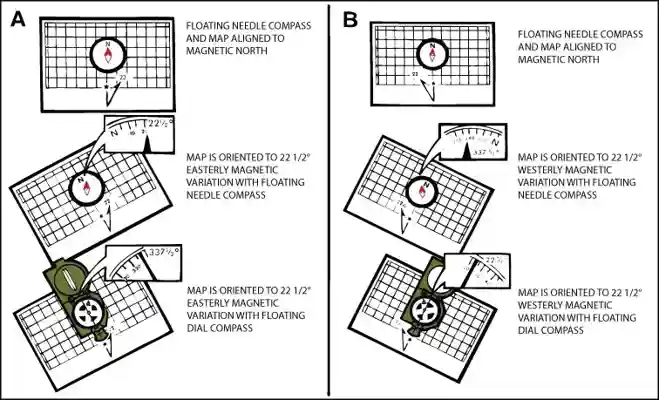
Figure 7-14. Orientating a map to terrain features
TERRAIN FEATURES
7-74. Major terrain features include-
Hills. A hill is an area of high ground. From a hilltop, the ground slopes down in all directions. A hill is shown on a map by contour lines forming concentric circles. The inside of the smallest closed circle is the hilltop (see figure 7-15).
Figure 7-15. A hill
Saddles. A saddle is a dip or low point between two areas of higher ground. A saddle is not necessarily the lower ground between two hilltops; it may be simply a dip or break along a level ridge crest. In a saddle, there is high ground in two opposite directions and lower ground in the other two directions. It is normally represented as an hourglass (see figure 7-16 on page 7-21).
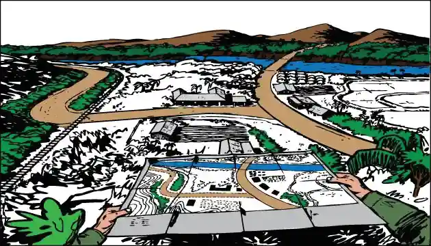
Figure 7-16. A saddle
Valleys. A valley is a stretched-out groove in the land, usually formed by streams or rivers. A valley begins with high ground on three sides and usually has a course of running water through it. In a valley, three directions offer high ground, while the fourth direction offers low ground. Depending on its size and where a person is standing, it may not be obvious that there is high ground in the third direction, but water flows from higher to lower ground. Contour lines forming a valley are either U-shaped or V-shaped. To determine the direction water is flowing, look at the contour lines. The closed end of the contour line (U or V) always points upstream or toward high ground (see figure 7-17).
Figure 7-17. A valley
Ridges. A ridge is a sloping line of high ground. On the centerline of a ridge, there will normally be low ground in three directions and high ground in one direction with varying degrees of slope. If isolated persons cross a ridge at right angles, they will climb steeply to the crest and then descend steeply to the base. When they move along the path of the ridge, depending on the geographic location, there may be either an almost unnoticeable slope or a very obvious incline. Contour lines forming a ridge tend to be U-shaped or V-shaped. The closed end of the contour line points away from high ground (see figure 7-18, page 7-22).
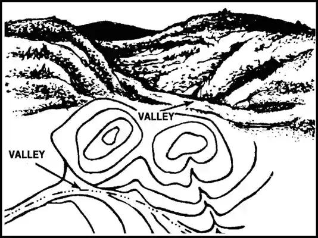
Figure 7-18. A ridge
Depressions. A depression is a low point in the ground or a sinkhole. It could be described as an area of low ground surrounded by higher ground in all directions, or simply a hole in the ground. Usually only depressions that are equal to or greater than the contour interval will be shown. On maps, depressions are represented by closed contour lines that have tick marks pointing toward low ground (see figure 7-19).
Figure 7-19. A depression
7-75. Minor terrain features include-
Draws. A draw is a stream course that is less developed than a valley. In a draw, there is essentially no level ground; therefore, there is little or no maneuver room within its confines. In a draw, the ground slopes upward in three directions and downward in the other direction. A draw could be considered as the initial formation of a valley. The contour lines depicting a draw are U-shaped or V-shaped, pointing toward high ground (see figure 7-20 on page 7-23).
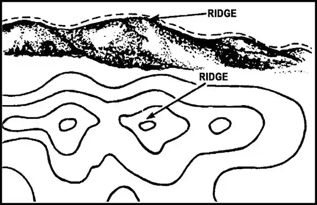
Figure 7-20. A draw
Spurs. A spur is a short, continuous sloping line of higher ground, normally jutting out from the side of a ridge. A spur is often formed by two roughly parallel streams cutting draws down the side of a ridge. The ground will slope down in three directions and up in one. Contour lines on a map depict a spur with the U or V pointing away from high ground (see figure 7-21).
Figure 7-21. A spur
Cliffs. A cliff is a vertical or near vertical feature; it is an abrupt change of the land. When a slope is so steep that the contour lines converge into one "carrying" contour of contours, this last contour line has tick marks pointing toward low ground). Cliffs are also shown by contour lines very close together and, in some instances, touching each other (see figure 7-22 on page 7-24).
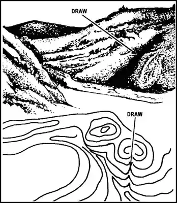
Figure 7-22. A cliff
7-76. Supplementary terrain features include-
Cuts. A cut is a manmade feature resulting from cutting through raised ground, usually to form a level bed for a road or railroad track. Cuts are shown on a map when they are at least 10 feet high, and they are drawn with a contour line along the cut line. This contour line extends the length of the cut and has tick marks that extend from the cut line to the roadbed, if the map scale permits this level of detail.
Fills. A fill is a manmade feature resulting from filling a low area, usually to form a level bed for a road or railroad track. Fills are shown on a map when they are at least 10 feet high, and they are drawn with a contour line along the fill line. This contour line extends the length of the filled area and has tick marks that point toward lower ground. If the map scale permits, the length of the fill tick marks are drawn to scale and extend from the base line of the fill symbol.
MEASURING DISTANCES
7-77. There are different ways of measuring distances. Several techniques are included in this section.
GRAPHIC SCALES
7-78. On most maps, there is another method of determining ground distance. It is by means of the graphic (bar) scales. A graphic scale is a ruler printed on the map on which distances on the map may be measured as actual ground distances. To the right of the zero (0), the scale is marked in full units of measure and is called the primary scale. The part to the left of zero (0) is divided into tenths of a unit and is called the extension scale. Most maps have three or more graphic scales, each of which measures distance in a different unit of measure (see figure 7-23).
Figure 7-23. Graphic scale
Ground Distance-Straight Line
7-79. To determine a straight-line ground distance between two points on a map, lay a straight-edged piece of paper on the map so that the edge of the paper touches both points. Mark the straight edge of the paper at each point. Move the paper down to the graphic scale and read the ground distance between the points. Use the scale that measures in the unit of measure desired (see figure 7-24).
Figure 7-24 Measure map distance-straight line
Ground Distance-Curved Line
7-80. To measure distance along a winding road, stream, or any other curved line, the straight edge of a piece of paper is used. Mark one end of the paper and place it at the point from which the curved line is to be measured. Align the edge of the paper along a straight portion and mark both the map and the paper at the end of the aligned portion. Keeping both marks together, place the point of the pencil on the mark on the paper to hold it in place. Pivot the paper until another approximately straight portion is aligned and again mark on the map and the paper. Continue in this manner until measurement is complete. Then place the paper on the graphic scale and read the ground distance (see figure 7-25).
Figure 7-25. Measure map distance-curved line
MEASURING AZIMUTH
7-81. Use the following steps to determine the grid azimuth of a line from one point to another on a map (for example, from point A to point B or point C to point D) (see figure 7-26 on page 7-26):
Step 1. Determine the grid azimuth of a line and draw a line connecting the two points.
Step 2. Place the index of the protractor at the point where the line crosses a vertical (north-south) grid line.
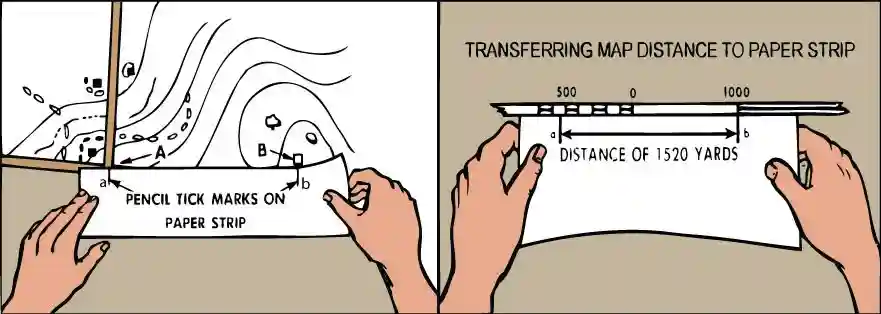
Step 3. Keeping the index at this point, align the 0° to 180° line of the protractor on the vertical grid line.
Step 4. Read the value of the angle from the scale; this is the grid azimuth to the point.
Figure 7-26. Measuring azimuth on a map
PLOTTING A DIRECT LINE
7-82. Use the following steps to plot a direction line from a known point on a map (see figure 7-27, page 7- 27):
Step 1. Construct a north-south grid line through the known point.
Step 2. Generally, align the 0° to 180° line of the protractor in a north-south direction through the known point.
Step 3. Holding the 0° to 180° line of the protractor on the known point, slide the protractor in the north-south direction until the horizontal line of the protractor (connecting the protractor index and the 90° tick mark) is aligned on an east-west grid line and draw a line connecting 0°, the known point, and 180°.
Step 4. Holding the 0° to 180° line on the north-south line, slide the protractor index to the known point.
Step 5. Make a mark on the map at the required angle. (Do not mark on the map.)
Step 6. Draw a line from the known point through the mark made on the map.
Figure 7-27. Plotting a direction Measuring Distances by Paces
7-83. A pace is equal to the distance covered every time the same foot touches the ground. To measure distance, count the number of paces, estimate the distance traveled, and apply that to the map and route of movement. Distances measured this way are only approximate. Before using dead reckoning navigation, it is important for each person to establish the length of his or her average pace. This is done by pacing a measured course many times and computing the mean. In the field, an average pace must often be adjusted because of the following conditions-
Slopes. The pace lengthens on a downgrade and shortens on an upgrade.
Winds. A headwind shortens the pace while a tailwind increases it.
Surfaces. Sand, gravel, mud, and similar surface materials tend to shorten the pace.
Elements. Snow, rain, or ice reduces the length of the pace.
Clothing. Excess weight of clothing shortens the pace while the type of shoes affects traction and therefore pace length.
FIELD-EXPEDIENT GUIDELINES FOR DISTANCE FROM A LANDMARK
7-84. Isolated persons must be able to estimate distance from an object to themselves. One way this can be done is by looking at trees. If they can see individual tree branches, they can estimate that they are about 0 to 0.6 mile away from that landmark. Individual trees are about 1 to 3 kilometers away. If isolated persons view the trees as a sort of shag-carpet look, the landmark would be about 3 to 5 kilometers away. A smooth looking carpet appearance is about 5 to 7 kilometers away. A bluish tint or haze in the distance indicates the landmark is about 7 to 10 kilometers away.
7-85. Darkness presents its own characteristics for land navigation because of limited or no visibility. However, the techniques and principles are the same as those used for day navigation. The success in nighttime land navigation depends on rehearsals during the planning phase before the movement, such as detailed analysis of the map to determine the type of terrain in which the navigation is going to take place, and the predetermination of azimuths and distances. Night vision devices can greatly enhance night navigation for the isolated person.
7-86. Night movements are considerably slower than day movements, but METT-TC may require movement during darkness. Pace counts increase during darkness, map checks will take longer, accountability is more difficult. The use of flashlights is not recommended. If an artificial light source is used ensure it is pointed straight down, during a map check it is advisable to cover yourself with a poncho or other material. Noise tends to carry at night and movement through a highly vegetated area may produce more noise than during
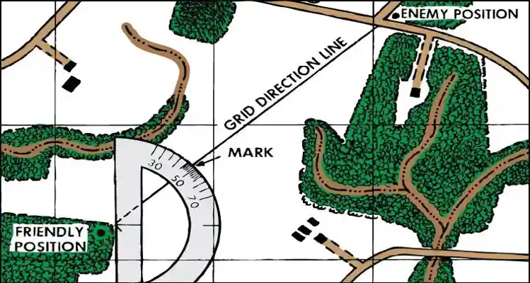
daylight. In this case it is advisable to alter the route to stay well away from any danger areas or cease movement altogether.
7-87. Navigation using the stars is recommended in some areas. The four cardinal directions can also be obtained at night using the same technique described for the shadow-tip method-just use the moon instead of the sun. In this case, the moon must be bright enough to cast a shadow.